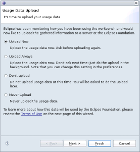
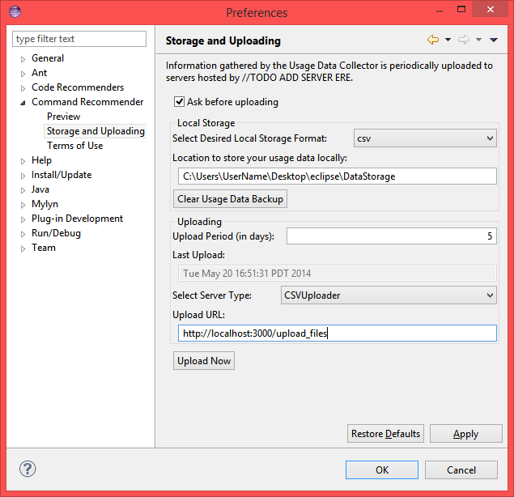

Command Recommender - Data Collector is designed to have a minimal impact on user experience. The impact on performance is negligible.
Once installed, the Data Collector immediately starts monitoring your use of Eclipse. In particular, it takes note of the views, editors, perspectives, and commands that you use. It also keeps track of when you bring the Eclipse workbench window into focus. At a lower level, the Data Collector records the bundles (plug-ins) that are loaded by Eclipse. The information collected amounts to the id of the entity (view, editor, perspective, etc.), the symbolic name and version of the bundle that contains the entity, and the time of the event.
We recognize that the data collected may contain sensitive information. Symbolic names for bundles can potentially include company and product names; bundle versions, as well as view, editor, and perspective ids could potentially also contain sensitive information. With this in mind, the Data Collector includes a filtering framework that can be used to restrict the type of information that is uploaded.
After a configurable period of time (five days by default) passes, it asks you for permission to upload.

At this point, you can tell the Data Collector what you want to do:
The period of time between requests to upload the usage data can be configured by changing the "Upload Period" field on the "Command Recommender | Storage and Uploading" preferences page.

The target for uploads is a server hosted by University of British Columbia or any other compatible server you specify. The server location can be customized on the same preference page shown above. The server and related databases will use the uploaded data to determine helpful commands to recommend back
A copy of the uploaded data is also stored locally. You can use the "Local Storage" section of the preferences page shown above to clear these data, or change the storage location.
Two different keys are used to identify the source of the uploaded data. The first key identifies the workstation; this key is stored locally in your "user home" directory. The second key identifies the workspace; this key is stored in the directory for the workspace. These keys are uploaded along with the usage data.